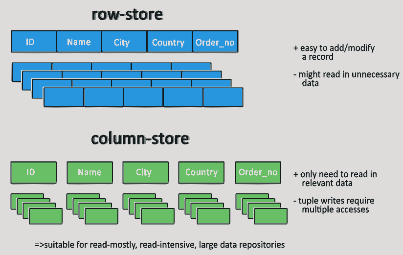
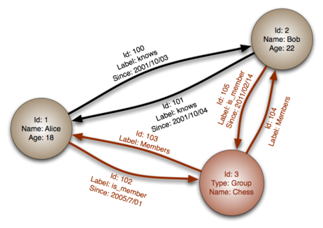
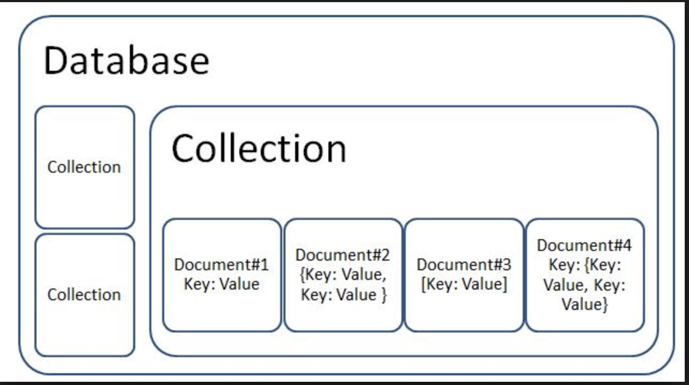

MongoDB
Database
Organized collection of data
Example:
- Phone book
- Registry in a hospital.
- Gradebook
Two major types of databases
- Relational database
- NoSQL database
Relational database
A relational database is a collection of data items with pre-defined relationships between them
SQL
Stands for Structured Query Language
Name of a standard language for communicating with relational databases
Advantages of SQL
Data Accuracy
Normalization
High Security
Additional information about relation database:
www.oracle.com/database/what-is-a-relational-database/aws.amazon.com/relational-database/
NoSQL database
Stands for "not only SQL"
non-relational data management system
Advantages of NoSQL
Elastic scalability
Big data applications
Database administration
Economy
Types of NoSQL Databases
Key-value Pair Based

Column-oriented
Graphs based
Document-oriented
Who use NoSQL
Amazon
What is MongoDB?
MongoDB is a document-oriented NoSQL database used for high volume data storage.
MongoDB Features
Each database contains collections which in turn contains documents
The document structure is more in line with how developers construct their classes and objects in their respective programming languages.
The rows (or documents as called in MongoDB) doesn't need to have a schema defined beforehand
The data model available within MongoDB allows you to represent hierarchical relationships, to store arrays, and other more complex structures more easily.
MongoDB example
{
_id: ObjectId(3da252d3902a),
type: "Presintation",
title: "MongoDB",
author: "Borisov A",
tags: [ "mongodb", "compass", "crud" ],
categories: [
{
name: "javascript",
description: "Presintation"
},
],
content: "MongoDB is a cross-platform..."
}
MongoDB CRUD
Create Operation
db.COLLECTION_NAME.insertOne({"key":"value"})db.COLLECTION_NAME.insertMany([<document 1>,<document 2>, ... ])Example
> db.users.insertOne({name: "Bob"})
{
"acknowledged" : true,
"insertedId" : ObjectId("5a52c53b223039ee9c2daaec")
}Read Operation
db.collection.find(query, projection)db.collection.findOne(query, projection)Example
> db.users.find().pretty()
{
"_id" : ObjectId("5e25bb58ba0cf16476aa56ff"),
"name" : "Tom",
"age" : 15,
"email" : "tom@example.com"
}Update Operation
db.collection.updateOne(<filter>, <update>, <options>)db.collection.updateMany(<filter>, <update>, <options>)Example
> db.users.updateMany({}, {$set: { registration: "incomplete"}})
{ "acknowledged" : true,
"matchedCount" : 4,
"modifiedCount" : 4
}
Delete Operation
db.collection.deleteOne(<filter>,<options>)db.collection.deleteMany(<filter>,<options>)Example
> db.users.updateOne(
{email: "tom@example.com" },
{$set: { status: "dormant"}
})
{ "acknowledged" : true,
"matchedCount" : 1,
"modifiedCount" : 1
}
>db.users.deleteMany({status:{$in: [ "dormant", "inactive" ]}})
{ "acknowledged" : true, "deletedCount" : 1 }